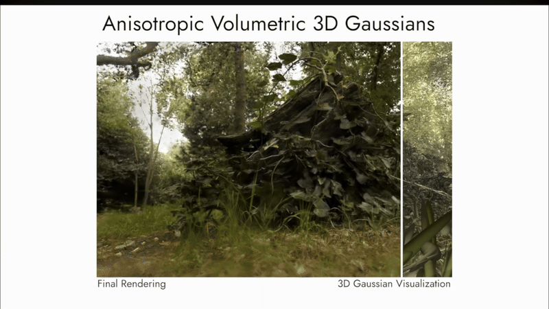

Column 1
Add a short description for the first video/image.
Current 3D navigation agents use fixed-resolution images, forcing a trade-off between computational cost and perceptual detail: low resolution limits object recognition, while high resolution is expensive to process at every step. One solution to this problem is providing an agent with the capacity of modulating the resolution of its vision, giving it the possibility to navigate at low cost and identify object relactively accuratly.
To prove the efficacy of this solution, we consider a RL 3D navigation task in AI2-THOR where an agent must reach and center a target object in apartment scenes. The agent performs navigation actions plus a special sensing action that temporarily increases observation resolution under a limited perceptual budget. Observations include RGB input, GPS+Compass, and past actions, encoded with a memory-based model (LSTM). The reward encourages successful goal completion and efficient navigation while penalizing time, failures, and unnecessary high-resolution sensing.
[Results] IDK
Object search in 3D scenes is a common task in embodied AI. An agent must move through an environment, interpret images, and decide where to go in order to find an object. In this project, we consider a setting where perception itself is an active and constrained process. The agent initially observes the scene at low resolution and may choose to acquire additional information by increasing the resolution of its current view before acting.
This project is motivated by two main observations. First, biological vision operates under similar constraints: perception is limited in resolution and attention is required to focus on relevant parts of the scene, which can be implicitly modeled through dynamic resolution. Second, selectively acquiring information can be more efficient than processing high-resolution images at every step, and allows the agent to adapt its perception to different stages of the task, such as navigation versus object recognition.
Most 3D navigation agents are trained on fixed resolution images, but it might not be suited for all aspects of the task. Prior work [Cite Zamir] has shown that agents can perform simple navigation tasks even with very low resolution observations. However, these agents could struggle in more complex environments, e.g. when contrast is low or when objects are numerous, complex or small. Navigation can be achieved with low visual information, but object recognition should require more details to be precise. Moreover, continuously processing high resolution images is computationally heavy and unnecessary in many situations. So there is a gap to bridge to have a model effective in both tasks and low cost. We therefore explored a similar setting by introducing dynamic resolution, allowing the agent to improve its camera resolution over time when it chooses to focus on the scene currently in vision. This is also a more natural approach to vision since it implicitly reflects attention.
Many real world systems operate under constraints on sensing and computation. A realistic agent should not rely on constant access to very dense information, but instead learn when it should acquire additional information: [MAKE LIST] • More realistic perception modeling. The progressive observation model captures the fact that perception is limited in resolution and constrained by time/energy, making the agent's vision closer to biological and real- world sensing. • Computational efficiency. By learning when high- resolution observations are truly necessary, the agent can reduce the number of expensive sensing and processing operations. • Robustness in complex environments. We believe that low resolution models, even if they demonstrated strong capacity, might struggle in more complex environments, and dynamic resolution could provide an attractive trade-off
As cited before, this work was largely inspired by [Cite Zamir]. The main difference obviously is that we incorporate a dynamic resolution instead of a sole low resolution camera, and we experiment with a slightly different task, full navigation and recognition of target object instead of navigation with a helping cue and a target position. [Cite Dynamic resolution network] explores in a similar way what we tried to demonstrate, where a cheap selector model is trained to select the lowest resolution for a subsequent CNN model to correctly perform image classification. This is related to our work as it highlights that full resolution images are not always necessary in vision models and that it is possible to envision a model capable of selecting its current resolution to achieve the best trade-off in a recognition task.
Navigation and object recognition tasks are common in the RL world, but to our knowledge, there is no directly comparable setup that introduces dynamic resolution in a RL agent.
1. Environement and Agent: We consider a standard RL setup for 3D navigation using the AI2-THOR simulator [cite AI2-Thor]. This simulator provides us with an already built-in simulation environement, and default apartment scenes.
Each episode begins with a target object and an initial agent pose. The goal is to navigate the environment, reach a target object, and have it in the field of view. At each time step, the agent can perform standard navigation actions: move forward, backward, left, or right by 25 cm; rotate left or right by 45 degrees; or end the episode, as well as a dedicated sensing action. This sensing action allows the agent to increase the resolution of its current observation while remaining at the same physical location. Once the agent moves or rotates, the observation resets to low resolution.
[Scheme of the presentation]
At the start of each episode, the environment resets the agent position, the sensing budget, and the target object. The agent then has at most 200 steps to find the target. The episode ends when the agent is either successful in the task, has spent too much time in the simulation or decides to stop the simulation. An episode is considered successful when the target object is visible (1.5 m visibility distance) and close (< 0.5m from the agent) We define a limited perceptual ”budget” and a perceptual cost, with the goal of forcing the model to only increase resolution when necessary, but also to have a fair limitation between different agent behavior.
The agent observations consist of the RGB returned by the AI2-Thor environment degraded to the current resolution level of the agent as main input, with auxilary features consisting of gps, compass, previous action, current resolution level, the remaining sensing budget and the current target [Maybe a scheme of this]
2. Downgrading image resolution: We implemented a downgrading script that degrades original 224x224 resolution to the defined resolution level. Input image size is set to maximum resolution. For a given level, the image is divided into non-overlapping square blocks of size 2level x 2level. Each block is replaced by the average value of its pixels. The resulting low-resolution representation is then upsampled back to 224x224 using nearest-neighbor interpolation.3. Model: To sample the next action, we defined a LSTM model [cite LSTM] concatenated with a frozen DINOv2 [cite DINOv2] pretrained Vision Transformer encoder to encode the 224x224 RGB images into arrays of size 768 by default. From the encoded image and the auxilary features, the LSTM predicts a distribution of probability over the action space, as well as a predicted reward value, which is used in the updating policy discussed below, and a hidden layer, giving the agent short-term memory to integrate past observations and avoid revisiting the same locations, important in this case since the problem reside in a partially observable environment.
4. Reward and Policy: [Copy what we said in progress for policy and check code for reward]
The results part of the report can be provided here
The conclusion and limitations part of the report can be provided here
Here you can see possible visualizations that can be used in this website

Start Frame

End Frame
Add a short description for the first video/image.
Add a short description for the second video/image.

\[ D_{\mathrm{KL}}(P \parallel Q) = \sum_{x} P(x)\,\log\!\left(\frac{P(x)}{Q(x)}\right) \]


The table format below can be used for results and other purposes.
| Method | Metric 1 | Metric 2 | Notes |
|---|---|---|---|
| Baseline | 0.00 | 0.00 | Reference setup |
| Method A | 0.00 | 0.00 | First variant |
| Method B | 0.00 | 0.00 | Second variant |